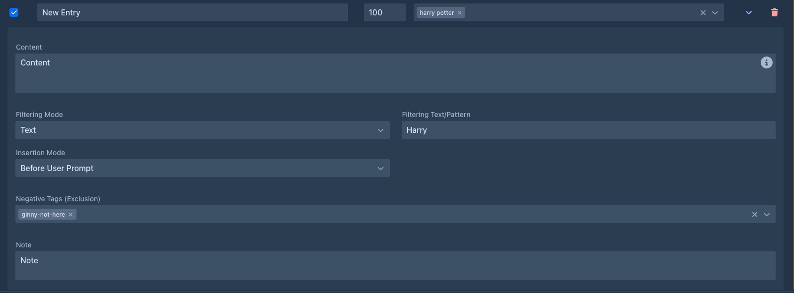

Entries & activation
The entry list
Each row of the lorebook editor is one entry:
Add Entry in the toolbar adds an entry with order 100. Changes are saved as you type.
Entry details
The ⌄ button opens the details:

Write the content as you want the model to read it - a short, factual description works best:
Captain Varro - commander of the harbor watch of Ostra, fifties, scarred left hand. Loyal to the Duke, distrusts the mages' guild. Speaks in short, clipped sentences.
Activation
Before each generated part, Marginalia goes through the entries of the book's lorebook and its sub lorebooks. An entry is activated when:
- the entry is enabled, and so is its lorebook;
- none of its negative tags is a tag of the book;
- it has no tags, or at least one of them is a tag of the book;
- it has no filter, or the filter matches the instructions for the part.
All conditions must hold. An entry without tags and filter is always active.
Tags
Tags connect entries with book tags (set on the book's About tab). Use them to share one lorebook between books that need different parts of it:
Tags must match exactly. A negative tag always wins over a tag.
Tags can also be given to a whole lorebook (the Tags field of the lorebook; lorebooks imported from files can carry them). They then count as tags of each of its entries.
Filters
A filter activates the entry only when the request for the part mentions it. It is matched against the user prompt of the part as it is sent - the Scene Setting, POV Character, Present Characters and Instructions you entered, inside the wording of the user prompt template.
For example, the regex \b(varro|captain)\b matches the whole word Varro or Captain, and
varro.*(harbor|docks) matches only when Varro and the harbor or the docks are both mentioned, in that order.
The filter sees the request, not the story
Filters check the instructions for the new part only, not the text of earlier parts. An entry about Varro is activated when Varro is mentioned in the scene, characters or instructions of the part you are writing - put him into Present Characters when he is in the scene.
The request also contains the text of the user prompt template itself. A filter for a word the template uses (the default one mentions characters, plot, tone...) is always active.
An invalid regular expression never matches; the entry stays inactive.
Combine tags and a filter when an entry should only be used in some books, and there only when it's relevant.
Order and insertion
Activated entries are put into the prompt sorted by Order, lowest first. Entries with the same order keep the order in which they were created. Entries from all included lorebooks are sorted together.
Insertion Mode decides where an entry goes:
Entries are separated by an empty line. Lore counts toward the context limit; with many long entries, less of the story fits into the prompt.
Templates in entries
The content of an entry is a template like the book prompts. It can use:
and all macros. For example, an entry that adapts to the point of view character:
Varro {{#povCharacter}}is seen through the eyes of {{.}}: {{/povCharacter}}a stern, scarred officer.All activated entries of one part share their variables in activation order: an entry can setvar a value that
entries later in the order (and the master template) read with getvar.
A syntax error in the content is shown under the field. The entry is still saved; until it is fixed, its content is used as plain text, without processing the template.
Tips
-
Keep entries short and factual; the model doesn't need prose, it needs facts.
-
One entry per character, place or concept, so each can be activated on its own.
-
Use always-active entries for the core of the world, filters for the cast and places, and tags to share a lorebook between books.
-
Check what was activated with Show Prompt on a generated part.